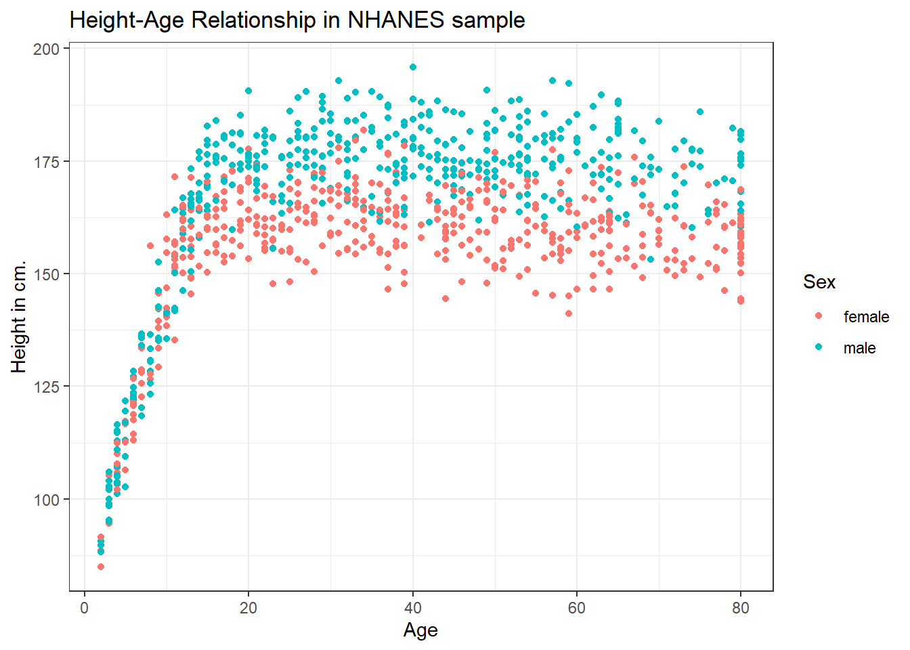
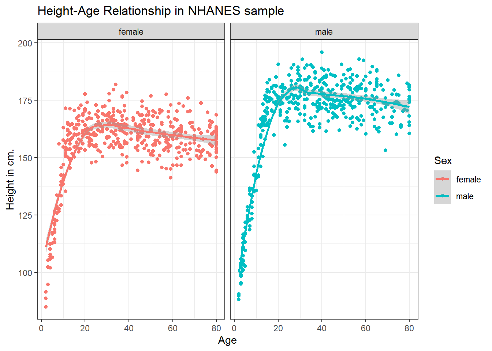
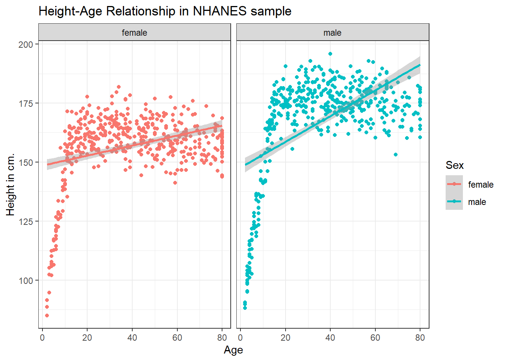
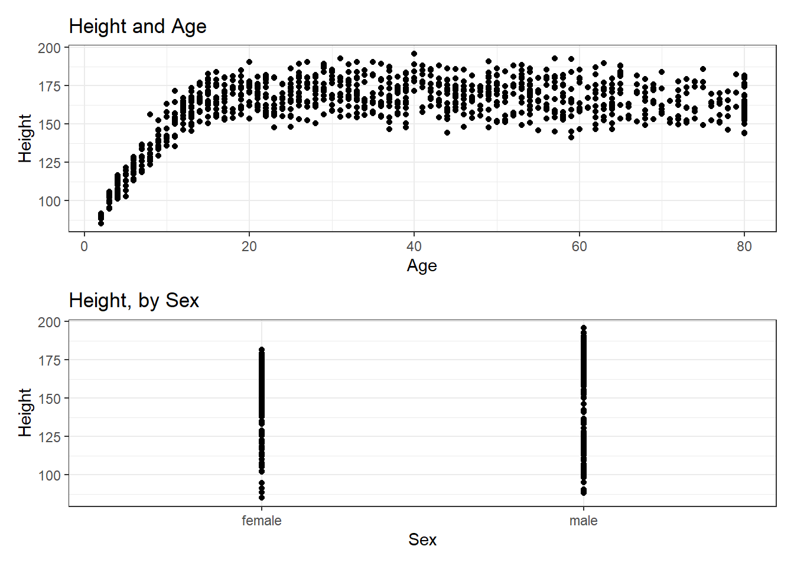
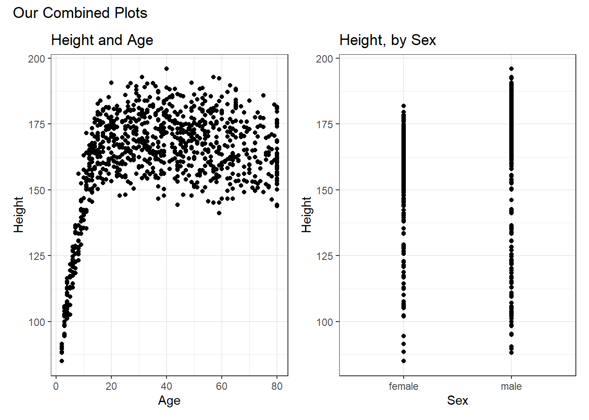

knitr::opts_chunk$set(comment = NA)
library(NHANES)
library(patchwork)
library(tidyverse)
theme_set(theme_bw())3 NHANES: A First Look
Next, we’ll explore some data from the US National Health and Nutrition Examination Survey, or NHANES.
We’ll display R code as we go, but we’ll return to all of the key coding ideas involved later in the Notes.
3.1 Setup: Packages Used Here
3.2 The NHANES data: A First Sample
The NHANES package provides a sample of 10,000 NHANES responses from the 2009-10 and 2011-12 administrations, in a data frame also called NHANES. We can obtain the dimensions of this data frame (think of it as a rectangle of data) with the dim() function.
dim(NHANES)[1] 10000 76We see that we have 10000 rows and 76 columns in the NHANES data frame.
For the moment, let’s gather a random sample of 1,000 responses from the 10000 rows listed in the NHANES data frame, and then look at three variables (labeled Gender, Age and Height) that describe those subjects1. Some of the motivation for this example came from a Figure in Baumer, Kaplan, and Horton (2017).
# library(NHANES) # already loaded NHANES package/library of functions, data
set.seed(431001)
# use set.seed to ensure that we all get the same random sample
# of 1,000 NHANES subjects in our nh_1 collection
nh_1 <-
slice_sample(NHANES, n = 1000, replace = FALSE) |>
select(ID, SurveyYr, Gender, Age, Height)
nh_1# A tibble: 1,000 × 5
ID SurveyYr Gender Age Height
<int> <fct> <fct> <int> <dbl>
1 69638 2011_12 female 5 106.
2 70782 2011_12 male 64 176.
3 52408 2009_10 female 54 162.
4 59031 2009_10 female 15 155.
5 64530 2011_12 male 53 185.
6 71040 2011_12 male 63 169.
7 55186 2009_10 female 30 168.
8 60211 2009_10 male 5 103.
9 55730 2009_10 male 66 161.
10 68229 2011_12 female 36 170.
# … with 990 more rows
# ℹ Use `print(n = ...)` to see more rowsWe have 1000 rows (observations) and 5 columns (variables) that describe the responses listed in the rows.
3.3 A Quick Numerical Summary
summary(nh_1) ID SurveyYr Gender Age Height
Min. :51624 2009_10:512 female:504 Min. : 0.00 Min. : 85.0
1st Qu.:57011 2011_12:488 male :496 1st Qu.:18.00 1st Qu.:156.2
Median :61979 Median :36.00 Median :165.0
Mean :61903 Mean :37.42 Mean :162.3
3rd Qu.:67178 3rd Qu.:56.00 3rd Qu.:174.5
Max. :71875 Max. :80.00 Max. :195.9
NA's :37 For the two variables that R recognizes as describing categories, SurveyYr and Gender, this numeric summary provides a small table of counts. For the Age and Height variables, we see the minimum, mean, maximum and other summary statistics.
3.4 Plotting Age vs. Height
Suppose we want to visualize the relationship of Height and Age in our 1,000 NHANES observations. The best choice is likely to be a scatterplot.
ggplot(data = nh_1, aes(x = Age, y = Height)) +
geom_point()Warning: Removed 37 rows containing missing values (geom_point).
We note several interesting results here.
- As a warning, R tells us that it has “Removed 37 rows containing missing values (geom_point).” Only 963 subjects plotted here, because the remaining 37 people have missing (NA) values for either Height, Age or both.
- Unsurprisingly, the measured Heights of subjects grow from Age 0 to Age 20 or so, and we see that a typical Height increases rapidly across these Ages. The middle of the distribution at later Ages is pretty consistent at at a Height somewhere between 150 and 175. The units aren’t specified, but we expect they must be centimeters. The Ages are clearly reported in Years.
- No Age is reported over 80, and it appears that there is a large cluster of Ages at 80. This may be due to a requirement that Ages 80 and above be reported at 80 so as to help mask the identity of those individuals.2
As in this case, we’re going to build most of our visualizations using tools from the ggplot2 package, which is part of the tidyverse series of packages. You’ll see similar coding structures throughout this Chapter, most of which are covered as well in Chapter 3 of Wickham and Grolemund (2022).
3.5 Restriction to Complete Cases
Before we move on, let’s manipulate the data frame a bit, to focus on only those subjects who have complete data on both Age and Height. This will help us avoid that warning message.
nh_1cc <- nh_1 |>
filter(complete.cases(Age, Height))
summary(nh_1cc) ID SurveyYr Gender Age Height
Min. :51624 2009_10:487 female:484 Min. : 2.00 Min. : 85.0
1st Qu.:57034 2011_12:476 male :479 1st Qu.:19.00 1st Qu.:156.2
Median :62056 Median :37.00 Median :165.0
Mean :61967 Mean :38.29 Mean :162.3
3rd Qu.:67269 3rd Qu.:56.00 3rd Qu.:174.5
Max. :71875 Max. :80.00 Max. :195.9 Note that the units and explanations for these variables are contained in the NHANES help file, available via typing ?NHANES in the Console of R Studio, or by typing NHANES into the Search bar in R Studio’s Help window.
3.6 The Distinction between Gender and Sex
The Gender variable here is mis-named. These data refer to the biological status of these subjects, which is their Sex, and not the social construct of Gender which can be quite different. In our effort to avoid further confusion, we’ll rename the variable Gender to Sex so as to more accurately describe what is actually measured here.
To do this, we can use this approach…
nh_1cc <- nh_1 |>
rename(Sex = Gender) |>
filter(complete.cases(Age, Height))
summary(nh_1cc) ID SurveyYr Sex Age Height
Min. :51624 2009_10:487 female:484 Min. : 2.00 Min. : 85.0
1st Qu.:57034 2011_12:476 male :479 1st Qu.:19.00 1st Qu.:156.2
Median :62056 Median :37.00 Median :165.0
Mean :61967 Mean :38.29 Mean :162.3
3rd Qu.:67269 3rd Qu.:56.00 3rd Qu.:174.5
Max. :71875 Max. :80.00 Max. :195.9 That’s better. How many observations do we have now? We could use dim to find out the number of rows and columns in this new data frame.
dim(nh_1cc)[1] 963 5Or, we could simply list the data frame and read off the result.
nh_1cc# A tibble: 963 × 5
ID SurveyYr Sex Age Height
<int> <fct> <fct> <int> <dbl>
1 69638 2011_12 female 5 106.
2 70782 2011_12 male 64 176.
3 52408 2009_10 female 54 162.
4 59031 2009_10 female 15 155.
5 64530 2011_12 male 53 185.
6 71040 2011_12 male 63 169.
7 55186 2009_10 female 30 168.
8 60211 2009_10 male 5 103.
9 55730 2009_10 male 66 161.
10 68229 2011_12 female 36 170.
# … with 953 more rows
# ℹ Use `print(n = ...)` to see more rows3.7 Age-Height by Sex?
Let’s add Sex to the plot using color, and also adjust the y axis label to incorporate the units of measurement.
ggplot(data = nh_1cc, aes(x = Age, y = Height, color = Sex)) +
geom_point() +
labs(title = "Height-Age Relationship in NHANES sample",
y = "Height in cm.")
3.7.1 Can we show the Female and Male relationships in separate panels?
Sure.
ggplot(data = nh_1cc, aes(x = Age, y = Height, color = Sex)) +
geom_point() +
labs(title = "Height-Age Relationship in NHANES sample",
y = "Height in cm.") +
facet_wrap(~ Sex)
3.7.2 Can we add a smooth curve to show the relationship in each plot?
Yes, by adding a call to the geom_smooth() function.
ggplot(data = nh_1cc, aes(x = Age, y = Height, color = Sex)) +
geom_point() +
geom_smooth(method = "loess", formula = y ~ x) +
labs(title = "Height-Age Relationship in NHANES sample",
y = "Height in cm.") +
facet_wrap(~ Sex)
3.7.3 What if we want to assume straight line relationships?
We could look at a linear model in each part of the plot instead. Does this make sense here?
ggplot(data = nh_1cc, aes(x = Age, y = Height, color = Sex)) +
geom_point() +
geom_smooth(method = "lm", formula = y ~ x) +
labs(title = "Height-Age Relationship in NHANES sample",
y = "Height in cm.") +
facet_wrap(~ Sex)
It seems like the more complex relationship between Height and Age isn’t well described by the straight line model.
3.8 Combining Plots with patchwork
The patchwork package in R allows us to use some simple commands to put two plots together.
Suppose we create plots called p1 and p2, as follows.
p1 <- ggplot(data = nh_1cc, aes(x = Age, y = Height)) +
geom_point() +
labs(title = "Height and Age")
p2 <- ggplot(data = nh_1cc, aes(x = Sex, y = Height)) +
geom_point() +
labs(title = "Height, by Sex")Now, suppose we want to put them together in a single figure. Thanks to patchwork, we can simply type in the following.
p1 / p2
or we can place the images next to each other, and add an annotation, like this:
p1 + p2 +
plot_annotation(title = "Our Combined Plots")
The patchwork package website provides lots of great examples and guides to make it very easy to combine separate ggplots into the same graphic. While there are other packages (gridExtra and cowplot are very nice, for instance) to do this task, I think patchwork is the most user-friendly, so that’s the focus of these notes.
3.9 Coming Up
Next, we’ll select a new sample of NHANES respondents a bit more carefully, introduce some new ways of thinking about data and variables, then we’ll study those subjects in greater detail.